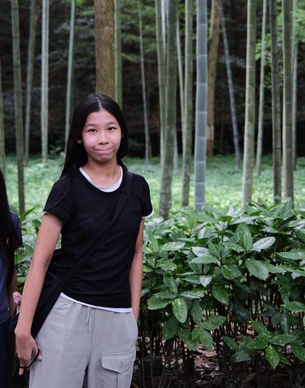
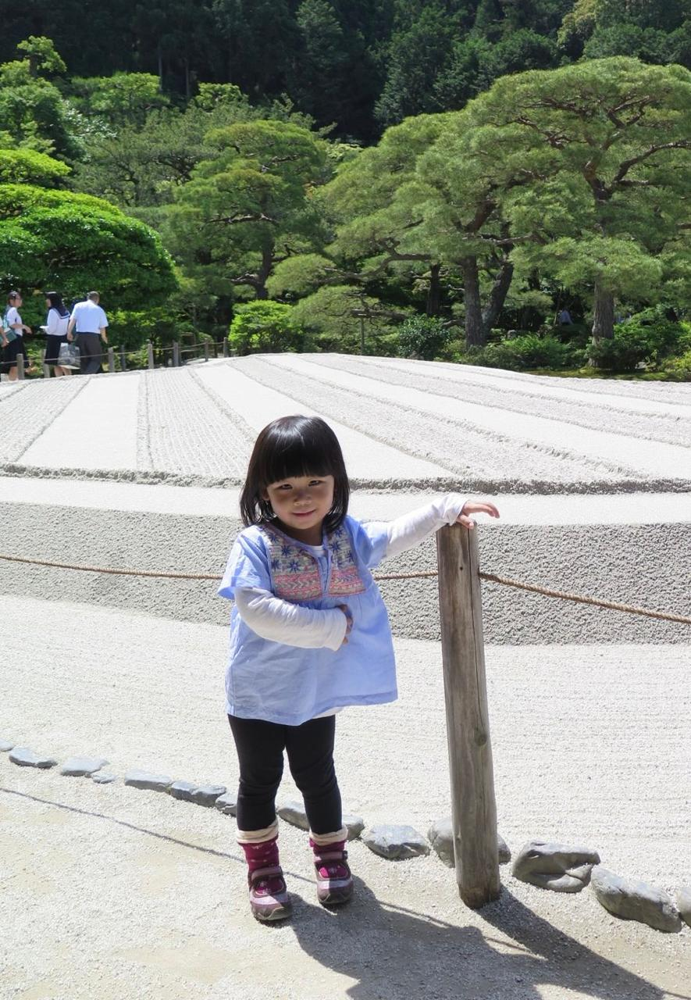

Nama Lengkap : Tara Sulistio
Tempat Lahir : Jakarta
Tanggal Lahir : 22 September 2011
Alamat : Menteng, Jakarta Pusat
Email: tara_10215@smp.santaursulajakarta.sch.id
Hobi : bermain gitar
Motto : You can start again, like the sun does every morning
Pesan : A mistake is a bruise, not a tattoo